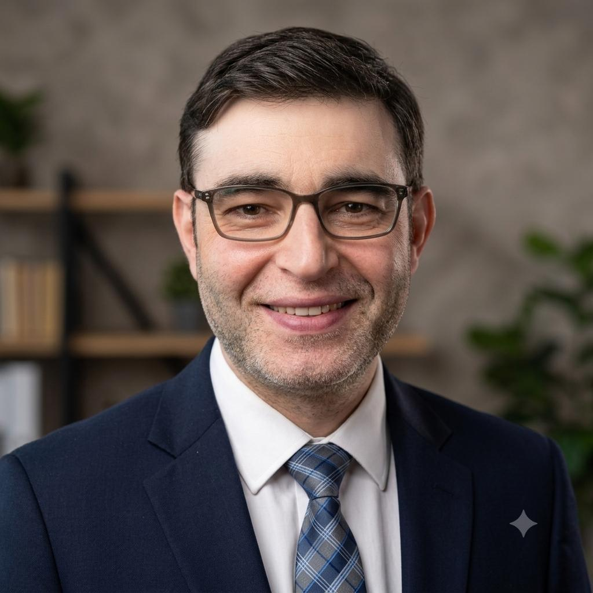

Platforms that enable
Self-service infrastructure, Kubernetes, and GitOps workflows that make the secure path a simpler path for engineering teams.
Engineering Leader | Platform Engineering, DevSecOps & Agentic AI
I’m Sushil Tiwari. I build self-service cloud platforms and lead teams that help engineers deliver securely, reliably, and at scale.

I bring together technical depth, operational discipline, and a focus on the people who build and use technology.
Self-service infrastructure, Kubernetes, and GitOps workflows that make the secure path a simpler path for engineering teams.
Agentic workflows with evaluation, observability, and human oversight designed into how the system operates.
Clear direction, coaching, and cross-functional partnership that help engineers grow and turn strategy into practical outcomes.
From hands-on architecture to leading engineering organizations, my work has centered on making technology more reliable and accessible.
Leading platform and DevOps engineers across Azure and AWS, shaping self-service infrastructure, cloud-native standards, and AI automation.
Led enterprise delivery automation and standardized CI/CD practices, reducing pipeline failures by up to 40%.
Helped move mainline releases from a three-month cycle to weekly releases across 20 migrated scrum teams.
Improved production operations through telemetry automation and standardized operational practices.
Platform work and applied AI initiatives that bring together developer enablement, automation, and thoughtful governance.
Making infrastructure accessible to application teams through a developer-friendly platform for provisioning cloud resources and deploying applications. The goal: give teams more autonomy while building security, standards, and operational governance into the workflow.
Exploring how Model Context Protocol connects AI agents to observability and operational tools, including Datadog, to support informed troubleshooting and infrastructure workflows.
A runtime policy and evaluation framework for AI agents, designed around auditable boundaries, verification, safety, and human oversight.
A multi-agent engineering framework connecting requirements, specifications, and code delivery through stateful orchestration and validated handoffs.
My approach combines hands-on systems thinking with a belief that the best engineering cultures create space for people to learn, lead, and do meaningful work.
Connect with me ↗